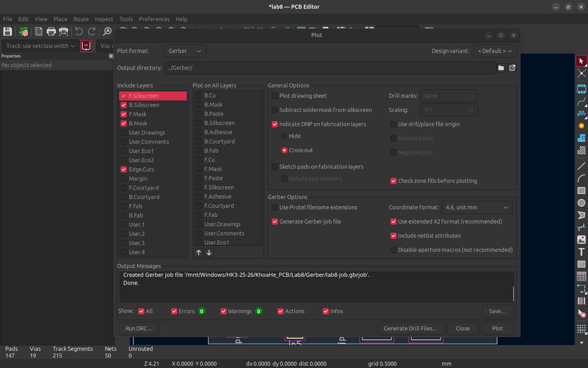
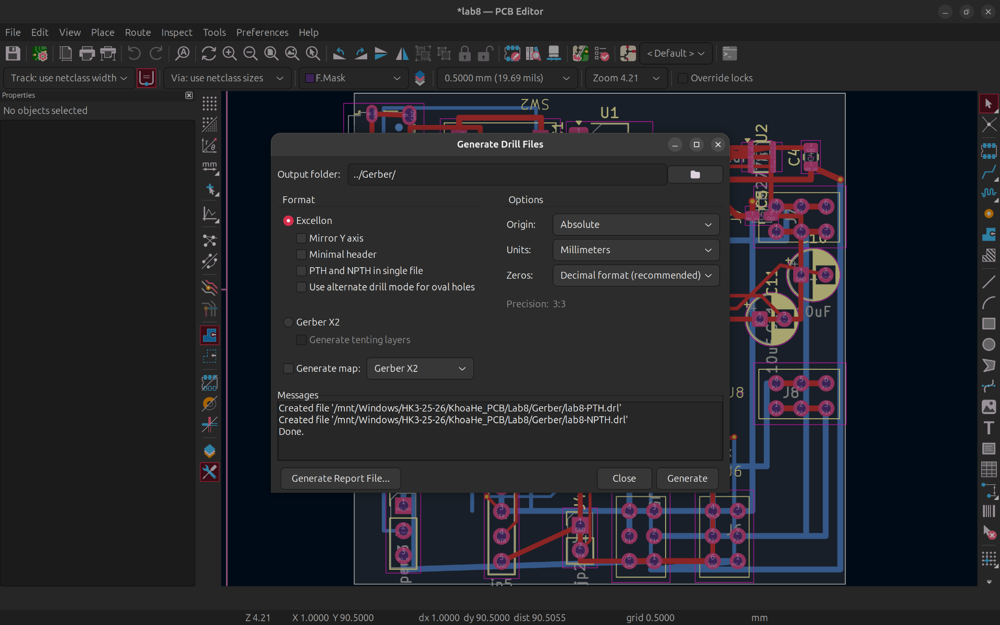
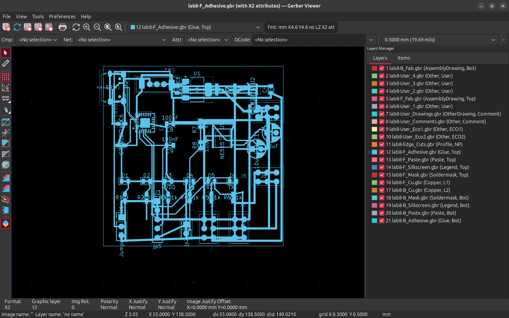
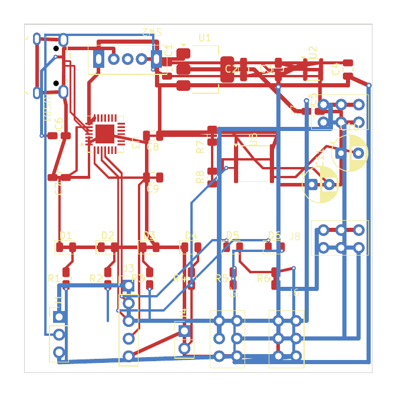
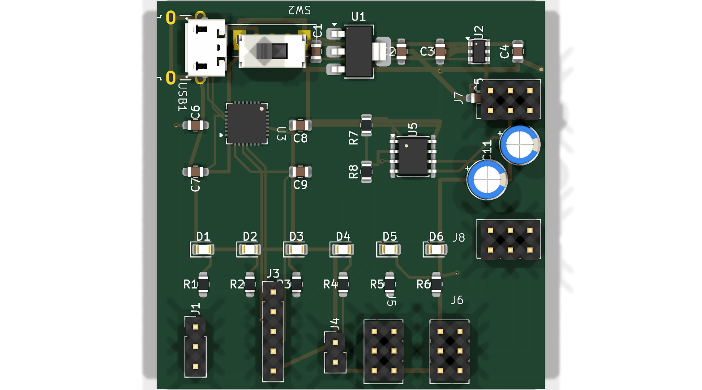
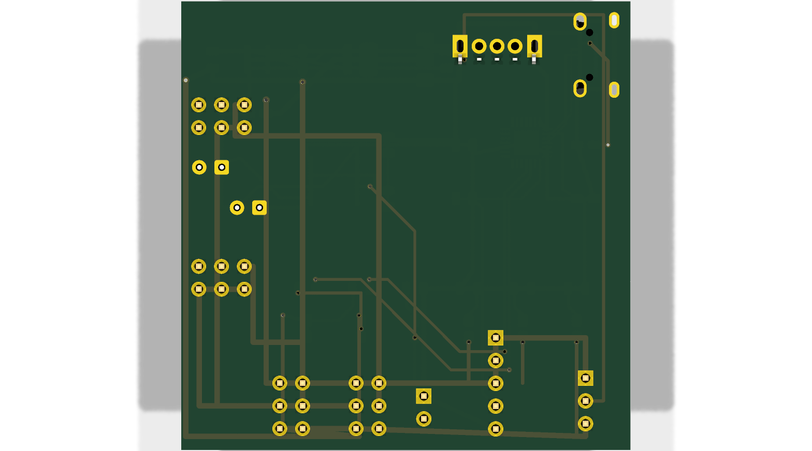
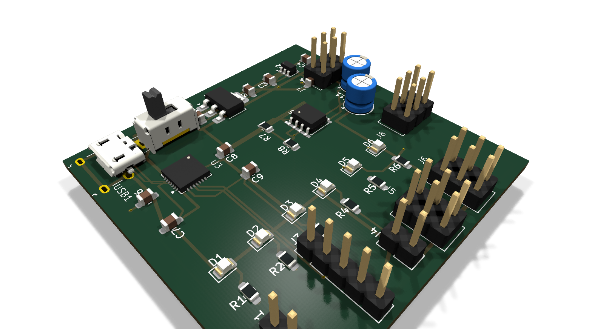

| Họ và tên: | Lê Ngọc Tường |
| MSSV: | 23207124 |
| Lớp: | 23DTV_CLC3 |
| Môn học: | Thiết kế mạch in PCB với KiCad (HK3/2025-2026) |
Yêu cầu: Nghiên cứu và phân tích các định dạng tệp xuất bản vẽ trong kỹ thuật chế tạo mạch in (CAD/CAM), so sánh vai trò của Gerber chuẩn với các định dạng vector, đồ họa kỹ thuật và các chuẩn sản xuất thông minh thế hệ mới (ODB++, IPC-2581).
Trong quá trình hoàn thiện thiết kế PCB, kỹ sư cần giao tiếp dữ liệu với nhiều bộ phận: xưởng chế tạo mạch thô (PCB Fab), dây chuyền dán linh kiện tự động (SMT Assembly), kỹ sư cơ khí (Mechanical CAD) và bộ phận quản lý tài liệu kỹ thuật. Bảng dưới đây tổng hợp các định dạng xuất thông dụng:
| Định dạng | Đuôi tệp tin | Mục đích sử dụng chính | Đặc tính kỹ thuật và khuyến nghị |
|---|---|---|---|
| Gerber RS-274X / X2 | .gbr, .gtl, .gbl... |
Định dạng tiêu chuẩn toàn cầu để gửi xưởng sản xuất bo mạch PCB (JLCPCB, PCBWay). | Mô tả hình học 2D từng lớp, chuẩn X2 nhúng thêm thuộc tính Netlist và Stackup. |
| Excellon Drill | .drl |
Điều khiển máy CNC khoan các lỗ xuyên mạ (PTH) và lỗ cơ khí không mạ (NPTH). | Định dạng toạ độ mũi khoan dạng ASCII, kèm tệp báo cáo tổng hợp .rpt. |
| PDF (Vector) | .pdf |
Xem trực quan, in phim thủ công, đính kèm hồ sơ kỹ thuật và báo cáo nghiệm thu. | Không phụ thuộc phần mềm, hỗ trợ in tỷ lệ 1:1, kiểm tra bố cục nhanh. |
| SVG (Scalable Vector) | .svg |
Chèn hình ảnh vector vào tài liệu web, minh họa kỹ thuật độ nét cao không vỡ nét. | Dễ chỉnh sửa bằng Inkscape/Illustrator, giữ cấu trúc layer vector linh hoạt. |
| DXF (AutoCAD) | .dxf |
Trao đổi với kỹ sư cơ khí thiết kế vỏ hộp (Enclosure), gá lắp máy CNC/In 3D. | Mô tả biên dạng cơ học Edge.Cuts, vị trí tâm lỗ bắt vít và cổng cắm ngoại vi. |
| ODB++ / IPC-2581 | .tgz / .xml |
Định dạng dữ liệu sản xuất thông minh tích hợp (All-in-One: mạch, khoan, linh kiện, BOM). | Loại bỏ sự phân mảnh của Gerber truyền thống, chuẩn hóa dây chuyền lắp ráp công nghiệp. |

Plot drawing sheet (TẮT): Tuyệt đối không in khung bản vẽ vào tệp Gerber để tránh nhầm lẫn với viền bo mạch thực tế.Subtract soldermask from silkscreen (BẬT): Tự động trừ lớp in lụa tại các vùng pad hàn để tránh dính mực in lụa gây cản trở tiếp xúc thiếc hàn.Use drill/place file origin (BẬT): Đồng bộ gốc toạ độ giữa bản vẽ Gerber, tệp khoan và máy gắp linh kiện tự động (Pick & Place).Check zone fills before plotting (BẬT): Tự động đổ lại các vùng đồng trước khi xuất, tránh sót lỗi cập nhật sau khi dời linh kiện.Tệp khoan điều khiển mũi khoan CNC tạo các lỗ xuyên mạ (Plated Through Hole - PTH) dùng cho via, chân cắm linh kiện và lỗ cơ khí định vị (Non-Plated Through Hole - NPTH).

| Mã dao | Đường kính lỗ | Đơn vị (Inch) | Số lượng | Chức năng kỹ thuật trên bo mạch |
|---|---|---|---|---|
| T1 | 0.300 mm | 0.0118" | 16 lỗ | Lỗ via nối tín hiệu và Plane GND giữa Top/Bottom (Via 0.6/0.3mm). |
| T2 | 0.400 mm | 0.0157" | 3 lỗ | Lỗ via phụ và điểm đo kiểm tra điện áp (Test Points). |
| T3 - T6 | 0.550 - 0.850 mm | 0.0217 - 0.0335" | 10 lỗ (slot) | Chân gá cơ học chịu lực cho cổng Micro USB1 và công tắc trượt SW2. |
| T7 | 0.900 mm | 0.0354" | 3 lỗ | Chân cắm Jumper 3 chân (J1) cấu hình mức nguồn 3.3V / 5V. |
| T8 | 0.950 mm | 0.0374" | 24 lỗ | Chân cắm các khối Header đôi 2x3 (J5, J6, J7, J8) ngõ ra tín hiệu. |
| T9 | 1.000 mm | 0.0394" | 10 lỗ | Chân cắm Header đơn 1x5 (J3), Header 1x2 (J4) và tụ hóa C10, C11. |
| Tổng cộng lỗ xuyên mạ (PTH): | 66 lỗ | 100% mạ đồng dẫn điện thành ống | ||
| NPTH-T1 | 0.800 mm | 0.0315" | 2 lỗ | Lỗ định vị cơ khí cổng USB (không mạ đồng, tệp lab8-NPTH.drl). |
Yêu cầu: Tạo trọn bộ tệp Gerber và tệp khoan cho bo mạch nguồn đa năng tích hợp (Lab 08), sử dụng phần mềm KiCad Gerber Viewer (GerbView) để nghiệm thu đa tầng và đóng gói sản xuất chuẩn công nghiệp.
Toàn bộ các tệp tin xuất ra được lưu tại thư mục Gerber/ và nén vào tệp Production/LAB8_GERBER_MANUFACTURING.zip bao gồm:
| STT | Tên tệp | Quy ước | Mô tả nội dung hình học và chức năng sản xuất |
|---|---|---|---|
| 1 | lab8-F_Cu.gtl |
Top Copper | Lớp đồng mặt trên: đường mạch nguồn, tín hiệu vi sai, pad linh kiện SMD. |
| 2 | lab8-B_Cu.gbl |
Bottom Copper | Lớp đồng mặt dưới: đường mạch kết nối phụ và mặt phẳng phủ mass GND. |
| 3 | lab8-F_Mask.gts |
Top Solder Mask | Mặt nạ hàn mặt trên: chừa cửa sổ hở đồng tại các pad để ăn thiếc hàn. |
| 4 | lab8-B_Mask.gbs |
Bottom Mask | Mặt nạ hàn mặt dưới: bảo vệ đường đồng chống oxy hóa và bắc cầu chì hàn. |
| 5 | lab8-F_Silkscreen.gto |
Top Silk | Mực in lụa mặt trên: ký hiệu linh kiện (R, C, U, D), tên cổng, vạch phân cực. |
| 6 | lab8-B_Silkscreen.gbo |
Bottom Silk | Mực in lụa mặt dưới: tên tác giả, MSSV, mã phiên bản bo mạch. |
| 7 | lab8-F_Paste.gtp |
Top Paste | Khuôn quét kem hàn mặt trên: dùng cắt stencil laser gia công hàn dán SMD. |
| 8 | lab8-B_Paste.gbp |
Bottom Paste | Khuôn kem hàn mặt dưới (không có linh kiện dán mặt dưới). |
| 9 | lab8-Edge_Cuts.gm1 |
Board Outline | Đường biên viền bo mạch: máy phay CNC cắt viền chính xác 50x50 mm. |
| 10 | lab8-PTH.drl |
Plated Drill | Tệp khoan điều khiển CNC gia công 66 lỗ mạ xuyên kim loại. |
| 11 | lab8-NPTH.drl |
Non-Plated | Tệp khoan 2 lỗ cơ khí không mạ định vị cổng USB. |
| 12 | lab8-job.gbrjob |
Gerber Job | Mô tả cấu trúc vật liệu: 2 lớp FR4, độ dày bo 1.6mm, đồng 1oz (35µm). |

LAB8_GERBER_MANUFACTURING.zip dung lượng 28 KB hoàn chỉnh, sẵn sàng đặt hàng.
|
 Hình 5. Phối cảnh 3D Mặt trên (Top View)
|
 Hình 6. Phối cảnh 3D Mặt dưới (Bottom View)
|
